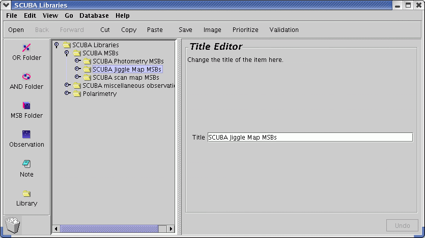
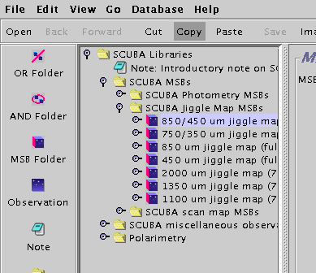
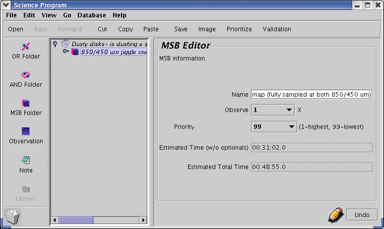
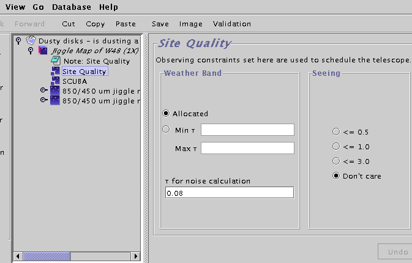
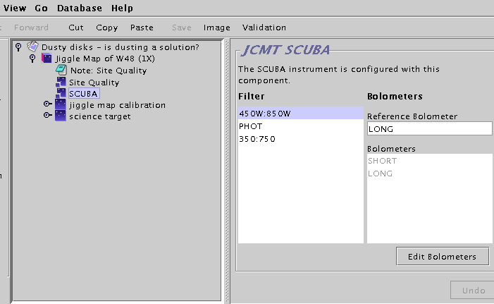
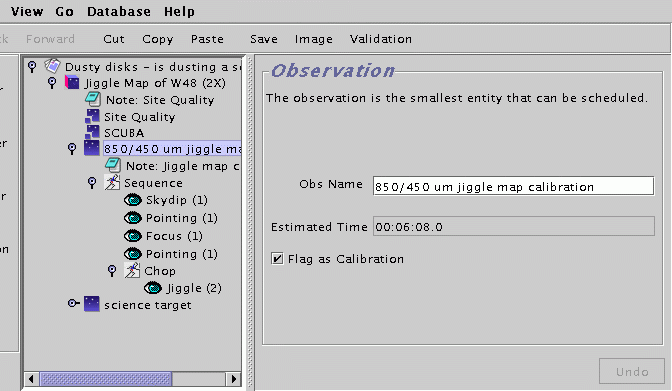
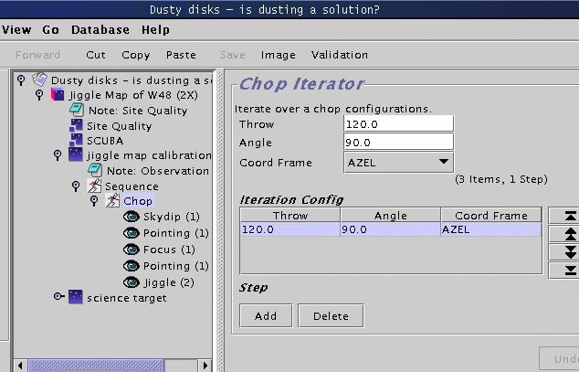
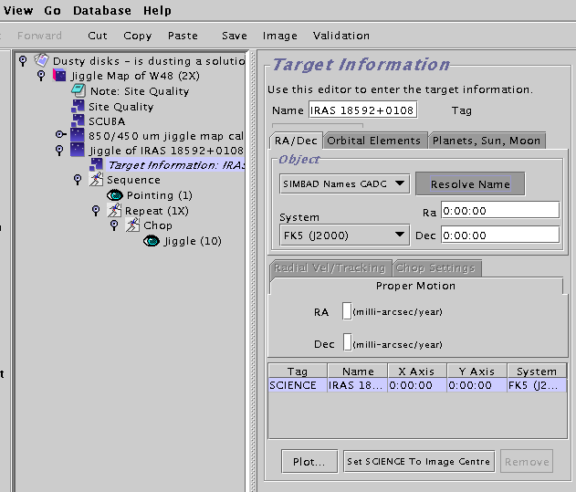
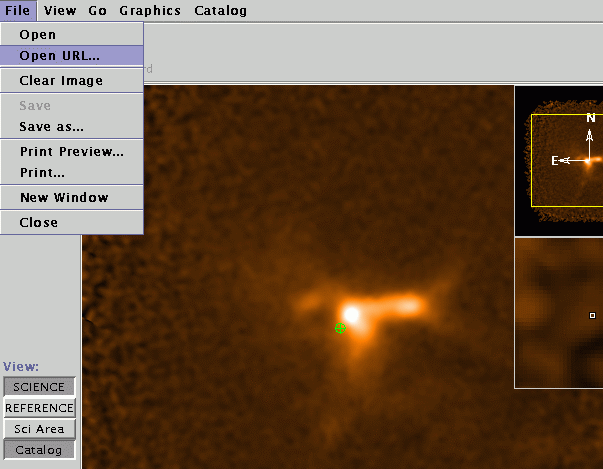
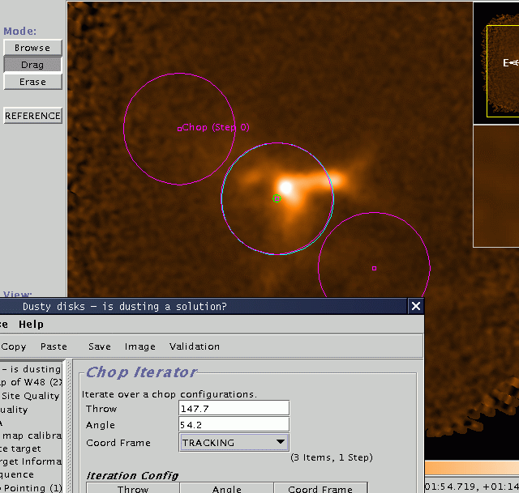

A window will pop up containing a note and list of folders. The little switch on the left of the folder icons is an open/close toggle switch. Push open the folder titled "SCUBA MSBs" and then open the folder entitled "Jiggle Map MSBs".

Inside the the "Jiggle Map MSBs" folder are a list of MSBs. Select the 850/450 MSB and click "Copy" on the toolbar.

Now go back to your Science Program window, and click on "Paste". The MSB will be dropped into your science program. Congratulations! You're now well underway. Now is a good time to save your progress, so use the File->Save option in your Science Program window and carry on.
Click on the title of the MSB. This will activate the MSB editor panel on the right section of your window.

The properties of an MSB are very simple.

We'll now go through these individually.

You probably don't need to change anything here. The default value of tau of "Allocated" means that your MSB can be scheduled when the tau is in the range that was specified by your TAG for your project. The default value of the sub-millimetre seeing is "Don't Care". If you think you need to change these values, click on the note entitled "Note: Site Quality" which contains a lengthy explanation. DO NOT request a tau value outside your TAG allocation. Your MSB will never be carried out if you do, since the scheduling software requires firstly, that the current tau is within your TAG allocation and then, only once this condition has been met, that the current tau is within your range of personal preference.

You probably don't need to change anything here. Since you started out by copying a 450/850 jiggle map out of the library it is already set to use the 450W/850W array. Just note that this is the place where you can specify which filter and which array or bolometer to use.

The properties of an observation are quite simple. It has a name and also an estimate of that observation's duration. The tickbox marked "Flag as calibration" is fairly self-explanatory but has some important implications. When this box is ticked it means:

Lots of stuff here, but no need to panic. First, there is another note, since we do try and make our library MSBs self-documenting. If you actually want to use this or any other of our library MSBs for real make sure you read all the notes! After the note there is what we call a sequence iterator (more about this below in Components, Iterators And All That) The sequence iterator doesn't do anything per se, so you can ignore it for the moment, but it is important to note that it represents the sequence of events at the telescope.
Inside it are a chop iterator and 4 "eyes". Eyes?? Time for another aside.
By clicking on the various eyes you can see their properties but you don't need to change any of those now.

The chop iterator has a list of chop configurations (in this example only one 120 arcsecond chop, but for scan maps there are typically six). Each chop needs to be specified by a throw, an angle, and co-ordinate frame of the angle. In this example the frame is AZEL (Azimuth Elevation) but other common options are TRACKING (RA & Dec) or FPLANE (Focal Plane, ie Nasmyth for SCUBA).

At first glance you might thing that what you have to do here is enter your target name and position and you can certainly do that. However you can do even less than that - if you are using a machine with an Internet connection try just entering the name of your target (in our example the IRAS source 18592+0108) and hit "Resolve Name".
After a brief pause the RA and DEC co-ordinate fields are populated with the SIMBAD co-ordinates for the source. The SIMBAD name for the source will also be indicated next to the "Resolve Name" button. And of course, double check that the co-ordinates are those you intend to observe.
But wait - that's not all.

A whole new window will pop up - this is the position editor. Looks a bit boring at the moment though, with just a small green crosshair in the middle. Let's make it a bit more interesting - go to Catalog menu and into the Image Servers item and chose a Digital Sky Survey near near you:

It's now full of stars. The display application, by the way, is is based on JSky, for those familiar with it.
If you're having problems with the position editor, the most likely explanation is that your version(s) of JRE, JAI and/or java may not be sufficiently up-to-date; check the download page for more information. If you are behind a firewall, you may need to check your proxy server settings.
The DSS may not be the most useful survey for planning sub-millimetre observations, but you can read in any FITS image with an appropriate WCS header using Open under the File menu. You can also fetch a FITS image over the Web. In the screenshot below I have loaded the SCUBA commissioning scan map of W48 (image courtesy Tim Jenness). If you have an Internet connection, go to the File menu, select "Open URL...:" and type in the following URL: http://www.jach.hawaii.edu/software/jcmtot/w48.fits or download the image by clicking on the link and and use File->Open to read it in. Notice that the RA/DEC position fields of the target component must be set reasonably near to the world co-ordinate of the FITS file otherwise the image may not load properly.

You will then see the DSS image replaced with the sub-millimetre image.
A short technical note if you are planning on generating your own image for import: if you want to import a SCUBA map in NDF format, convert it to FITS by using the Starlink convert utility with the following arguments:ndf2fits encoding=FITS-IRAF bitpix=32 comp=DIf you have difficulty despite doing this, let us know.
As I mentioned before, the green cross-hair is the position of your science co-ordinates. Click on the button on the left side of the position editor entitled "Sci Area". The circle that is drawn is the SCUBA field of view.
Now for the useful thing I mentioned earlier. While leaving the position editor window open, go back to your science program window and click on your chop iterator that is inside your science observation. Now look at the position editor. The chop beams and the area in which they will rotate during integration are drawn. Well, that's no good - we're chopping onto bright stuff!
This is where the position editor comes into its own. We are going to use it to specify where exactly we would like to chop. In the chop iterator, use the drop down menu to change the chopping co-ordinate frame from AZEL to TRACKING (i.e. RA/DEC). You will notice that in the position editor the uncertainty circles have disappeared, since we will always chop in the same position in the sky:

Now back in the position editor, click on the Drag button on the upper left side of the window. The click on the centre of one of the chop beams in the display and drag it away from the emission:

You will note that the values in the chop iterator have automatically changed to reflect the new chop throw and angle values. Neat, eh? If you are going to do this for real and have a calibration observation in the same MSB, don't forget that the chop in your calibration observation should be the same, so you should update the calibration chop iterator with whatever values you decided on for your science calibration.
You can also click on the target component and use Drag to change your science co-ordinates if you wish.

The repeat iterator acts on things that are inside the repeat iterator (i.e. indented under it) in turn. So if you set it to 2, your science observation consists of a pointing followed by two jiggle maps. How many data files will this result in? Three!
Now you can see how your time usage builds up. Working our way inside out (and bottom to top):
 The Science Program will give you the estimated time of all
MSBs inside it including the number of repeats. So if you have a
1hr MSB (as in this example) and you set the MSB counter to 2,
your MSB estimated time will be 1hr and your Science Program
time will show 2hrs.
The Science Program will give you the estimated time of all
MSBs inside it including the number of repeats. So if you have a
1hr MSB (as in this example) and you set the MSB counter to 2,
your MSB estimated time will be 1hr and your Science Program
time will show 2hrs.

You may then click on the note itself, which allows you to tick the "Show to observer" option and enter your comments. Notes which are available to observers will appear in a dark blue colour in your science program window. You can also then specify useful information like required S/N, which may help observers to avoid wasting time on your observations by going too deep.

If you prefer, you can also put in an individual note in each MSB. If there is a "Show to observer" note inside an MSB, as well as a "Show to observer" note higher up in the hierarchy, the two will be concatenated in the observer's display. Hence you could, if you wished, put a general note beneath the program title and then a specific note within each MSB - both will be visible.